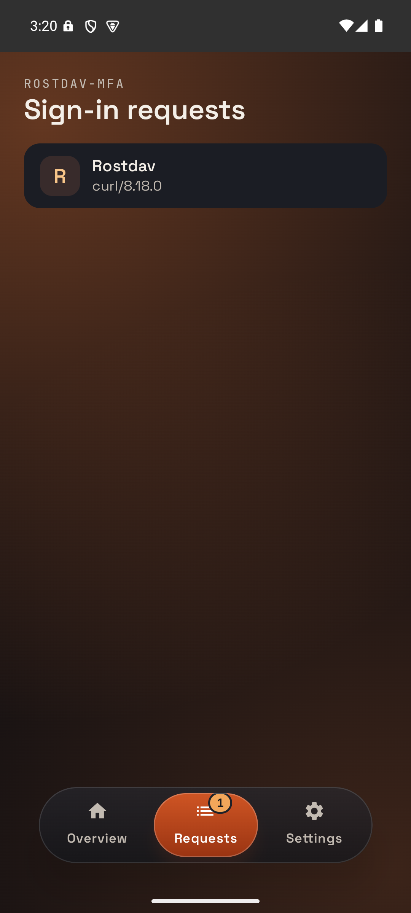

Deine Sicherheit. Deine Kontrolle.
rostdav-mfa gibt Anmeldungen an deinem eigenen Rostdav-Server mit einem Tipp und deinem Fingerabdruck frei. Kein Konto, keine Cloud, kein Dritter.

Was es kann
Zahlenabgleich
Der Browser zeigt eine Zahl, dein Telefon drei. Du wählst die richtige. So lässt sich eine Anfrage, die du nicht gestartet hast, nicht aus Versehen freigeben.
Mit dem Fingerabdruck signiert
Der Freigabeschlüssel liegt im hardwaregestützten Schlüsselspeicher des Telefons. Er wird erst nach Fingerabdruck oder Gesicht benutzt und verlässt das Telefon nie.
Läuft auf deinem Rostdav
Die App spricht nur mit deinem Server. Die Standard-Version braucht keinen Google-Dienst; sie holt neue Anfragen ab, solange die App offen ist.
So funktioniert es
Anmelden
Du meldest dich im Browser bei Rostdav an und schickst die Anfrage an dein Telefon. Die Seite zeigt eine Zahl.
Abgleichen
Dein Telefon zeigt Dienst, Gerät und ungefähren Ort. Du wählst die Zahl, die der Browser zeigt.
Bestätigen
Du bestätigst mit Fingerabdruck oder Gesicht, und der Browser meldet dich an. Falsche Zahl oder Ablehnen: Die Anmeldung wird abgelehnt.
Die App




Sicherheitsmodell
- Hardwaregestützter Schlüssel. Der Freigabeschlüssel entsteht im Android-Schlüsselspeicher und wird nur nach Biometrie benutzt.
- Alles ist signiert. Anfragen und Antworten tragen Signaturen; der Server prüft Signatur, Zahl und Zeit.
- Kein Tracking. Die App hat kein Konto, keine Analyse und spricht nur mit deinem Rostdav-Server.
- Screenshots gesperrt. Die Freigabe blockiert Bildschirmaufnahmen und die Vorschau in der App-Übersicht.
- Telefon verloren. Entferne es in deinem Rostdav-Konto; es kann nie wieder eine Anmeldung freigeben.
Stand
Heute schon da
Einrichten per QR-Code oder von Hand, Zahlenabgleich, Freigabe per Biometrie, die Liste deiner Telefone und letzten Ereignisse, Telefon entfernen, dunkles und helles Design, Deutsch und Englisch. Auf einem Emulator gegen ein echtes Rostdav getestet.
Geplant: Authenticator-Tresor
Einmalcodes für andere Dienste, verschlüsselt auf dem Telefon gespeichert. Geplant, noch nicht gebaut. Es gibt noch keine Store-Version; du baust die App aus dem Quellcode.